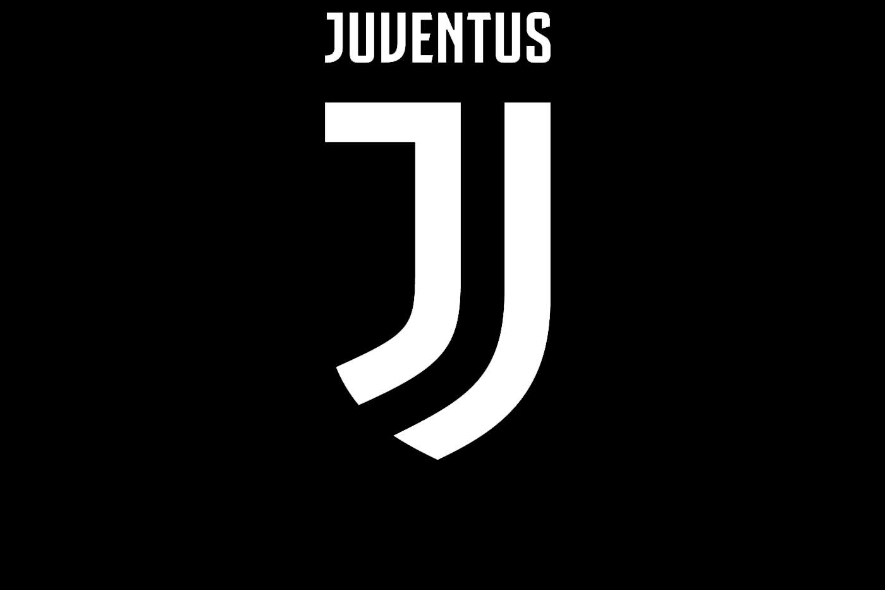
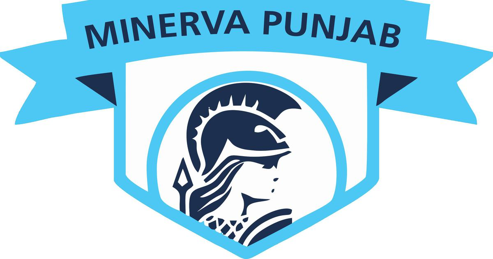

barcelonai
juventus
man united
minerva
barcelonai
juventus
man united
minerva
Futbol Club Barcelona (Catalan pronunciation: [fubˈbɔl ˈklub bəɾsəˈlonə] (About this soundlisten)), commonly referred to as Barcelona and colloquially known as Barça ([ˈbaɾsə]), is a Spanish professional football club based in Barcelona, Catalonia. Founded in 1899 by a group of Swiss, Spanish, English, and Catalan footballers led by Joan Gamper, the club has become a symbol of Catalan culture and Catalanism, hence the motto "Més que un club" ("More than a club"). Unlike many other football clubs, the supporters own and operate Barcelona. It is the fourth-most valuable sports team in the world, worth $4.06 billion, and the world's richest football club in terms of revenue, with an annual turnover of €840,8 million.[2][3] The official Barcelona anthem is the "Cant del Barça", written by Jaume Picas and Josep Maria Espinàs.[4] Domestically, Barcelona has won a record 74 trophies; 26 La Liga, 30 Copa del Rey, 13 Supercopa de España, 3 Copa Eva Duarte, and 2 Copa de la Liga trophies, as well as being the record holder for the latter four competitions. In international club football, the club has won 20 European and worldwide titles; 5 UEFA Champions League titles, a record 4 UEFA Cup Winners' Cup, a joint record 5 UEFA Super Cup, a record 3 Inter-Cities Fairs Cup, and 3 FIFA Club World Cup.[5] Barcelona was ranked first in the International Federation of Football History & Statistics Club World Ranking for 1997, 2009, 2011, 2012, and 2015[6][7] and currently occupies the second position on the UEFA club rankings.[8] The club has a long-standing rivalry with Real Madrid; matches between the two teams are referred to as El Clásico.

Manchester United Football Club is a professional football club based in Old Trafford, Greater Manchester, England, that competes in the Premier League, the top flight of English football. Nicknamed "the Red Devils", the club was founded as Newton Heath LYR Football Club in 1878, changed its name to Manchester United in 1902 and moved to its current stadium, Old Trafford, in 1910. Manchester United have won more trophies than any other club in English football,[5][6] with a record 20 League titles, 12 FA Cups, five League Cups and a record 21 FA Community Shields. United have also won three UEFA Champions Leagues, one UEFA Europa League, one UEFA Cup Winners' Cup, one UEFA Super Cup, one Intercontinental Cup and one FIFA Club World Cup. In 1998–99, the club became the first in the history of English football to achieve the continental European treble.[7] By winning the UEFA Europa League in 2016–17, they became one of five clubs to have won all three main UEFA club competitions.Manchester United was the highest-earning football club in the world for 2016–17, with an annual revenue of €676.3 million,[11] and the world's third most valuable football club in 2019, valued at £3.15 billion ($3.81 billion).[12] As of June 2015, it is the world's most valuable football brand, estimated to be worth $1.2 billion.[13][14] After being floated on the London Stock Exchange in 1991, the club was purchased by Malcolm Glazer in May 2005 in a deal valuing the club at almost £800 million, after which the company was taken private again, before going public once more in August 2012, when they made an initial public offering on the New York Stock Exchange. Manchester United is one of the most widely supported football clubs in the world,[15][16] and has rivalries with Liverpool, Manchester City, Arsenal and Leeds United.

Juventus Football Club (from Latin: iuventūs, "youth"; Italian pronunciation: [juˈvɛntus]), colloquially known as Juve (pronounced [ˈjuːve]),[4] is an Italian professional association football club based in Turin, Piedmont. Founded in 1897 by a group of Torinese students, the club has worn a black and white striped home kit since 1903 and has played home matches in different grounds around its city, the latest being the 41,507-capacity Juventus Stadium. Nicknamed Vecchia Signora ("the Old Lady"), the club has won 35 official league titles, 13 Coppa Italia titles and eight Supercoppa Italiana titles, being the record holder for all these competitions; two Intercontinental Cups, two European Cups / UEFA Champions Leagues, one European Cup Winners' Cup, a joint national record of three UEFA Cups, two UEFA Super Cups and a joint national record of one UEFA Intertoto Cup.[5][6] Consequently, the side leads the historical Federazione Italiana Giuoco Calcio (FIGC) ranking[a] whilst on the international stage occupies the 5th position in Europe and the eleventh in the world for most confederation titles won with eleven trophies,[8] having led the UEFA ranking during seven seasons since its inception in 1979, the most for an Italian team and joint second overall.The club's fan base is the largest at national level and one of the largest worldwide.[20][21] Unlike most European sporting supporters' groups, which are often concentrated around their own club's city of origin,[22] it is widespread throughout the whole country and the Italian diaspora, making Juventus a symbol of anticampanilismo ("anti-parochialism") and italianità ("Italianness").

Punjab Football Club (previously as Minerva Punjab F.C.) is an Indian professional football club based in Mohali, Punjab. The club competes in the I-League, under licence from the All India Football Federation (AIFF).The Club will Play In Indian Super League (Country's 1st tier League) from the next 2020-2021 season . Minerva, since inception in 2013 as a club, have won the I-League title once, the Punjab State Super Football League title twice, and were also the runners-up of the I-League 2nd Division. Minerva was crowned champions of I-League in 2017–18. The club is a partnership agreement between Ranjit Bajaj, Founder and Director of MPFC (now Punjab Football Club) and Mohali-based firm RoundGlass Sports. Punjab plays their I-League home matches at the Guru Nanak Stadium in Ludhiana. On October 30, 2019, the club was renamed as Punjab Football Club and 2019–20 I-League would be their first season as Punjab F.C.The team was established in 2005 as Minerva Academy and has a football and cricket club. Initially, the team took part in its first major tournament at the national level i.e. I-League 2nd Division and were the runners up for the season. They lost to five-time I-League champions Dempo SC in the Final. They were promoted to I-League after an impressive stint at the 2nd Division. They finished their first-ever I-League season at the second last position. They also played the 2016 Durand Cup. They came last in the group stage and hence couldn't qualify for the semi-finals. Next season, surprising everyone, they won the I-League title, which was their first league win ever in the top division. They became the first ones from North India to win the league since 1996. This title made the team qualify for their first-ever Asian stint.
